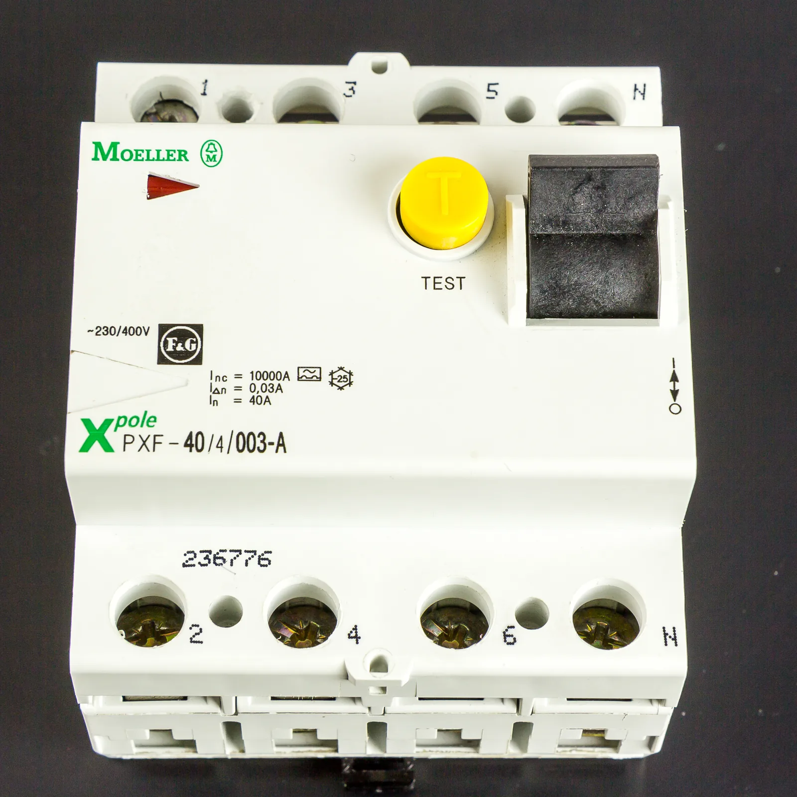
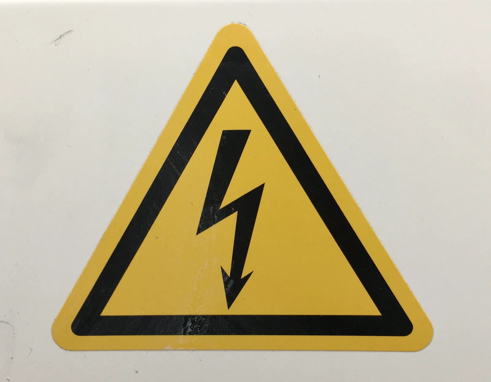

Electrical safety at home and at work
Why does the kitchen fuse trip when many devices are on at the same time, even though none of them is broken?
Prior knowledge
- Electric power is $P = UI$, and a conductor produces thermal power $P = RI^2$chapter Electric power and the heating of a resistor
- In a parallel connection every branch has the same voltage and the currents of the branches add upchapter Resistors in series and in parallel
- An insulator withstands an electric field only up to its dielectric strengthchapter The capacitor and its energy
Think about it
On a Saturday morning in the kitchen, coffee is brewing, the kettle is boiling water for tea, the toaster is on and porridge is heating in the microwave oven. After a moment the kitchen goes dark: one circuit breaker in the fuse board has tripped. No device is broken.
Why did the circuit breaker trip, and does the same fuse also protect a person from electric shock?
Optional Recall: the current of a device
Predict
Make your predictions before investigating 2 questions
Prediction 1: fuse or residual current device?
Prediction 2: a bird on a conductor
Investigate
Which devices fit in the same circuit?
Made-up example data · Invented example data: typical powers of home appliances, not a measurement.
The sockets of a kitchen are on the same circuit, which is protected by a $10\,\text{A}$ fuse. The mains voltage is $230\,\text{V}$, and the devices are connected in parallel.
| device | $P$ |
|---|---|
| kettle | $2000\,\text{W}$ |
| coffee maker | $1000\,\text{W}$ |
| microwave oven (input power) | $1200\,\text{W}$ |
| toaster | $900\,\text{W}$ |
| refrigerator | $100\,\text{W}$ |
Calculate the current of each device, $I = P : U$. Then find which combinations of two devices fit in the circuit without exceeding the rated current of the fuse, and how large a current would flow if all the devices were on at the same time.
How large a current flows in the circuit cable when the kettle and the microwave oven are on at the same time?
Hint 1: a guiding question
The devices are in parallel. How do the currents of devices in parallel combine in the circuit cable?
Hint 2: what is the connection
The current in the circuit cable is the sum of the currents of the devices, that is, the total power divided by the voltage.
Hint 3: an intermediate step
$I = (2000\,\text{W} + 1200\,\text{W}) : 230\,\text{V}$.
Show the solution
Given
power of the kettle $P_1 = 2000\,\text{W}$, input power of the microwave oven $P_2 = 1200\,\text{W}$, voltage $U = 230\,\text{V}$
Find
the current $I$ in the circuit cable in amperes
Principle
The devices are connected in parallel, so the voltage across each is $230\,\text{V}$ and their currents add up in the circuit cable. The total current is therefore obtained from the total power of the devices.
Formula
$I = \dfrac{P_1 + P_2}{U}$
Conversions
None needed: $1\,\text{W} : 1\,\text{V} = 1\,\text{A}$.
Substitution
Answer
$14\,\text{A}$
Two significant figures like the power $1200\,\text{W}$. The current is larger than the rated current of the fuse, $10\,\text{A}$, so the circuit is overloaded.
Reasonableness
The currents of the devices are $8.7\,\text{A}$ and $5.2\,\text{A}$, and their sum is the same $13.9\,\text{A}$. Each device fits in the circuit alone, but not together. All five devices together would draw $5200\,\text{W} : 230\,\text{V} \approx 23\,\text{A}$.
More to investigate 2 tasks
Dry or wet skin?
Made-up example data · Invented example data: the resistances of the current path are indicative orders of magnitude. The effect limits are approximate values for the effects of current described in the standard IEC 60479-1.
A person touches the frame of a faulty device whose voltage relative to the ground is $230\,\text{V}$. A current flows from the hand through the body to the feet and the ground. The table gives the resistance of the whole current path in three situations. The first row holds only if the shoes and the floor are dry and undamaged and the person does not touch anything earthed at the same time, such as a tap.
| situation | $R$ |
|---|---|
| dry hands, rubber-soled shoes, dry floor | $200\,\text{k}\Omega$ |
| dry hands, bare feet on a dry floor | $20\,\text{k}\Omega$ |
| wet hands, bare feet on a wet floor | $1.0\,\text{k}\Omega$ |
Calculate the current through the body in each situation, in milliamperes. Compare the currents with the approximate effect limits: a current of about $0.5\,\text{mA}$ can be felt, with about $10\,\text{mA}$ you may not be able to let go, and from about $50\,\text{mA}$ upward the danger of ventricular fibrillation of the heart increases.
How large a current flows through the body in wet conditions? Answer in milliamperes.
Hint 1: a guiding question
The body is part of the circuit. Which law gives the current when the voltage and the resistance are known?
Hint 2: what is the connection
$I = U : R$ when the resistance is in ohms: $1.0\,\text{k}\Omega = 1000\,\Omega$.
Hint 3: an intermediate step
$I = 230\,\text{V} : 1000\,\Omega$, and $1\,\text{A} = 1000\,\text{mA}$.
Show the solution
Given
touch voltage $U = 230\,\text{V}$, resistance of the current path in wet conditions $R = 1.0\,\text{k}\Omega$
Find
the current $I$ through the body in milliamperes
Principle
The body is part of the circuit between the frame of the device and the ground, so the current through it is obtained from Ohm's law with the resistance of the whole current path.
Formula
$U = RI$, so $I = \dfrac{U}{R}$
Conversions
$1\,\text{A} = 1000\,\text{mA}$.
Substitution
Answer
$230\,\text{mA}$
Two significant figures like the resistance $1.0\,\text{k}\Omega$.
Reasonableness
The current is more than four times the limit for the danger of ventricular fibrillation, $50\,\text{mA}$. With rubber-soled shoes the current would be $230\,\text{V} : 200\,\text{k}\Omega = 1.15\,\text{mA}$ and with bare feet on a dry floor $11.5\,\text{mA}$; in wet conditions the resistance becomes $200$ times smaller, so the current grows $200$-fold. Shoes reduce the current like this only if they are undamaged and dry, the floor is dry and the person does not touch a tap or an earthed device at the same time; otherwise the current bypasses the shoes, and shoes must not be relied on as protection.
Conclusion: what protects the cable, what protects a person?
Write, on the basis of the calculations in the tables: why does the fuse trip even though no device is broken, and why does the same fuse not protect a person? Why does wet skin make an electric shock more dangerous?
Model answer
The devices of the circuit are in parallel, so their currents add up in the fuse. The kettle draws $8.7\,\text{A}$ and the microwave oven $5.2\,\text{A}$; each fits alone in a $10\,\text{A}$ circuit, but together the current is $13.9\,\text{A}$, so the fuse cuts off the current before the cable overheats. A fuse reacts to currents of amperes, but a current dangerous to a person is tens of milliamperes, one hundredth of the rated current of the fuse. The small current through a person is therefore cut off by the residual current device (RCD). The current through the body is $I = U : R$. When the skin and the floor are wet, the resistance falls from about $200\,\text{k}\Omega$ to about $1\,\text{k}\Omega$, and the current grows from about $1\,\text{mA}$ to about $230\,\text{mA}$, which is life-threatening. The numbers have been calculated from invented example data.
Assess your own answer
Tick the points your own answer already contains.
Theory
Key idea
A fuse protects the cable from overheating
The electricity of a home is divided into circuits in the fuse board. Each circuit has its own circuit cable and its own fuse, usually $10\,\text{A}$ or $16\,\text{A}$. The sockets and lights of one circuit are connected in parallel, so the voltage across each device is $230\,\text{V}$ and the currents of the devices add up in the circuit cable (chapter Resistors in series and in parallel). The fuse is at the start of the circuit cable, so the current of the whole circuit flows through it. A single device can be in working order, but many devices together exceed the rated current of the fuse.
The conductors of the circuit cable have a small resistance, and they produce thermal power $P = RI^2$ (chapter Electric power and the heating of a resistor): when the current doubles, the thermal power of the cable becomes four times as large. The size of the fuse is chosen according to the cable: the cable determines how large a current the fuse may let through. If the current is larger for a long time, the cable and its connections heat up, the insulation is damaged and a fire can start. The fuse cuts off the current before that happens. A small overload can continue for a long time, but the larger the overcurrent, the faster the fuse acts; in a short circuit the current is cut off in a fraction of a second. In a screw-in fuse a thin wire melts from its own heating, whereas a circuit breaker trips and is switched back on. A blown fuse is never replaced with a larger one.
Earthing leads the fault current away from the person
The two holes of a socket take the line conductor L and the neutral conductor N. An earthed socket also has protective earth contacts PE, which are connected to the yellow-green protective earth conductor, that is, the protective conductor. In the distribution board of the building, the protective conductor is connected to the earthing and to the conductor coming from the grid along which the current returns to the supply. The colours of the insulation of the conductors are well established in Finland: in new installations the line conductor is usually brown, the neutral conductor blue and the protective earth conductor yellow-green. In old installations the colours may differ, and you must never conclude from the colour of a conductor that it is not live.
The conductive metal frame of a washing machine or a kettle is connected to protective earth through the plug. If the insulation of the line conductor fails and the metal frame becomes live, the protective conductor gives the fault current a low-resistance path back to the supply. The large fault current makes the fuse or the circuit breaker cut off the current quickly. A residual current device can also cut off the supply when the fault current it detects exceeds its tripping limit. Without protective earthing, the frame would stay live, and a current would flow through a person touching the frame to the ground. This explanation applies to the TN system common in Finland; in other earthing systems the path of the fault current can be different. For this reason the earth contact must not be bypassed, and an earthed plug must not be connected to a socket without earthing by means of an extension cord or an adapter.
Protection classes tell how a device protects the user
The rating plate of a device has the sign of its protection class. A protection class I device has a conductive frame that is protectively earthed, and its plug has earth contacts. A protection class II device has no earthing: the live parts are separated from the user by double or reinforced insulation, and the plug is often flat. A protection class III device works at a protective extra-low voltage, at most $50\,\text{V}$ alternating voltage or $120\,\text{V}$ direct voltage, which comes from a safety transformer or a battery. In ordinary conditions, touching it does not cause a dangerous current.
The residual current device protects a person
A fuse does not notice a current through a person: its rated current is amperes, but a current of just tens of milliamperes through the body can be life-threatening. A fuse protects a person only together with protective earthing, when a fault causes an earth fault. The small current through a person is cut off by a residual current device (RCD). It compares the current going to the device in the line conductor with the current returning in the neutral conductor. In an intact circuit they are equal. If part of the current gets to the ground through a fault, for example through a person, the returning current is smaller. When the difference exceeds the tripping current, usually $30\,\text{mA}$, the device cuts off the current in a fraction of a second. In new installations the socket circuits are protected with an RCD, and its test button should be pressed regularly.

An RCD does not prevent all shocks. If a person touches the line conductor and the neutral conductor at the same time, the current returns along the neutral conductor, and there is no difference between the currents of the line and neutral conductors. For this reason live parts are never touched, even if the circuit has an RCD.
The dielectric strength of an insulator
The plastic sheath of cables, the body of a plug and the insulators of high-voltage lines separate the live parts from people. Every insulator, however, withstands only an electric field of a certain size. When the field exceeds the dielectric strength of the insulator, the insulator starts to conduct and a spark discharges through it (chapter The capacitor and its energy). In a uniform field, an insulating layer of thickness $d$ withstands a voltage $E_\text{max} d$. A larger voltage therefore needs a thicker insulator or a longer air gap, and the insulator must be intact: a crack, moisture or dirt weakens the insulation.
High-voltage lines and step voltage
Electricity is transmitted from power plants at a high voltage, in the national grid as much as $400\,\text{kV}$, because for the same power a high voltage means a small current and thus small thermal losses $RI^2$ in the lines. High-voltage conductors are bare, and they are insulated by the surrounding air. The dielectric strength of air is about $3\,\text{MV/m}$, so you do not need to touch a conductor to get a shock: an electric arc can jump from the conductor to an object brought near it, such as the boom of a crane, a fishing rod or the string of a kite. The voltage of the overhead line of trains is $25\,\text{kV}$, so you must not climb on the roof of the carriages.
A bird can sit on a bare conductor because both its feet are at almost the same potential: the potential difference between the feet is very small, so only a very small current flows through the bird. The danger arises when a body connects two points at different potentials, for example a conductor and the ground.
If a conductor falls to the ground, the current spreads into the ground. The potential of the ground is greatest at the point of contact and decreases with distance, so there is a voltage between different points. The voltage between a person's feet is called the step voltage: it is the larger, the closer to the point of contact you are and the longer your step is. You move away from a fallen conductor with short steps, feet together, or by hopping with both feet together; you do not approach the conductor, and you report the damage to the emergency number $112$.

Safe action at home and at work
In Finland, actual electrical installation work may be done only by electrical professionals, and the company doing the work must be in the register of the Finnish Safety and Chemicals Agency Tukes as an electrical contractor. A layperson may do only specifically permitted minor electrical jobs, and even those only when they are sure they know how to do the job safely and know the instructions for it. Such jobs include, for example, replacing a fuse and a lamp, resetting a tripped circuit breaker or residual current device (RCD), repairing a single-phase extension cord, replacing the broken single-phase power cord and plug of an appliance and connecting a light fitting with a lighting connector block. The work is always done with the circuit de-energised. An up-to-date list of the permitted jobs is on the website of Tukes. When in doubt, the job is left to an electrical professional.
At workplaces such as building sites, extension cords and devices are inspected, in damp places an RCD or a protective extra-low voltage is used, and a damaged device is taken out of use. If a device smells of burning, gets hotter than usual or gives small electric shocks, its plug is pulled out and the device is taken for repair. If someone is stuck to a live part, the current is switched off first, before the person is touched, and the emergency number $112$ is called.
Current of a circuit and touch current
The devices of a circuit are in parallel at the same voltage, so the current of each device is $I_k = P_k : U$, and the sum of them flows in the circuit cable and the fuse:
$$I = \frac{P_1 + P_2 + P_3 + \dots}{U}$$
where $I$ is the total current of the circuit cable ($\text{A}$), $P_1, P_2, \dots$ are the powers of the devices that are on at the same time ($\text{W}$) and $U$ is the mains voltage $230\,\text{V}$. The mains voltage is the rms value of the alternating voltage. This chapter considers devices whose current and voltage are in phase, such as heating devices, or whose power factor is assumed to be approximately one. Then the power is calculated with the formula $P = UI$ as with a direct voltage. In general, the active power of an alternating-current circuit also depends on the phase difference between the voltage and the current. The circuit is not overloaded when $I$ is at most the rated current of the fuse $I_\text{f}$. The total power of the devices may therefore be at most $230\,\text{V} \cdot 10\,\text{A} = 2300\,\text{W}$ in a $10\,\text{A}$ circuit and $230\,\text{V} \cdot 16\,\text{A} = 3680\,\text{W}$ in a $16\,\text{A}$ circuit.
The current through the body
When a person touches a live part and the ground at the same time, their body is part of the circuit. The current through the body is obtained from Ohm's law (chapter Resistance and Ohm's law):
$$I = \frac{U}{R}$$
where $I$ is the current through the body ($\text{A}$), $U$ is the touch voltage, that is, the voltage between the points of contact ($\text{V}$), and $R$ is the resistance of the whole current path ($\Omega$): the resistances of the skin, the inside of the body, and the shoes and the floor, in series.
The resistance of the body is not constant. Most of it is in the skin, and it depends on the moisture of the skin, the size of the contact area, the path of the current and the voltage. With dry skin and insulating shoes, the resistance of the current path can be hundreds of kilohms. Wet or sweaty skin, a large contact area and bare feet on a wet floor reduce it to about a kilohm, and then a touch voltage of $230\,\text{V}$ gives a current of $230\,\text{V} : 1\,\text{k}\Omega \approx 230\,\text{mA}$. The resistance of the inside of the body is only of the order of hundreds of ohms.
Shoes reduce the current only if they are undamaged and dry, the floor is dry and the person does not touch anything else earthed at the same time, such as a tap or an earthed device: then the current flows past the shoes. Shoes must not be regarded as equipment that protects against electric shock.
| $I$ (approx.) | effect |
|---|---|
| $0.5\,\text{mA}$ | the current can be felt |
| $10\,\text{mA}$ | the grip does not release |
| $30\,\text{mA}$ | breathing becomes difficult |
| over $50\,\text{mA}$ | danger of ventricular fibrillation |
About $0.5\,\text{mA}$ is the threshold of perception. A current of about $10\,\text{mA}$ cramps the muscles so that you may not be able to let go: this is the let-go threshold. A current of over $50\,\text{mA}$ can cause ventricular fibrillation of the heart if it lasts about a second; a shorter shock needs a larger current.
The table applies to the $50\,\text{Hz}$ alternating current of a home. The usual tripping current of an RCD, $30\,\text{mA}$, has been chosen so that the device usually cuts off the current before it has time to cause ventricular fibrillation. The values are indicative, and they are based on the effects of current on an adult described in the international standard IEC 60479-1. The effect also depends on the duration and path of the current and on the person, and no current can be regarded as certainly safe.
Common misconception
Many people think that a fuse protects a person from electric shock. A fuse protects the cables: its rated current is $10\,\text{A}$ or $16\,\text{A}$, whereas a current of only about $50\,\text{mA}$ through the body can cause ventricular fibrillation of the heart. A fuse does not notice so small a current through a person at all. It protects a person only together with protective earthing: in a frame fault, a large fault current flows along the protective conductor back to the supply, and the fuse cuts it off. The small current through a person is cut off by the residual current device (RCD), which trips at a fault current of about $30\,\text{mA}$.
Another mistake is to think that a large voltage alone is dangerous or that a small voltage is always safe. The harm is done by the current through the body, which depends on both the voltage and the resistance of the current path. A bird sits safe on a $20\,\text{kV}$ conductor because the potential difference between its feet is very small, but wet skin can make even a smaller voltage dangerous.
Summary
- The devices of one circuit are in parallel, so the current through the fuse is their total current $I = (P_1 + P_2 + \dots) : U$. A fuse protects the cable from overheating, because the thermal power of the cable is $RI^2$.
- Protective earthing connects the metal frame of a device to the protective conductor. The fault current of a frame fault flows along the yellow-green protective conductor back to the supply, and then the fuse or the circuit breaker cuts off the current. The protection classes are I (earthing), II (double insulation) and III (protective extra-low voltage).
- A residual current device (RCD) compares the currents of the line and neutral conductors and cuts off the current when the difference exceeds about $30\,\text{mA}$.
- The current through the body is $I = U : R$. Wet skin reduces the resistance, and a current of just tens of milliamperes can be life-threatening.
- An insulator withstands a field only up to its dielectric strength; from a high-voltage line an electric arc can jump through the air without contact. Near a conductor that has fallen to the ground, the step voltage is dangerous.
- In Finland, actual electrical installation work belongs to electrical professionals. A layperson may do only specifically permitted minor jobs, such as replacing a fuse, and only if they know how to do the job safely.
Optional Return to your predictions
Compare your predictions with the theory and the currents you calculated. Then return to the opening question: why did the kitchen circuit breaker trip, and what protects a person?
Would you change your prediction?
Examples
Once you have studied the chapter's theory, move on to the guided examples. In the first you follow a worked solution step by step; in the next ones you make the choices yourself, and the hints help if you get stuck.
Example 1: A kitchen fuse
A kitchen socket circuit is protected by a $16\,\text{A}$ fuse. In the morning a kettle ($2.2\,\text{kW}$), a coffee maker ($1.0\,\text{kW}$) and a microwave oven with an input power of $1.3\,\text{kW}$ are on at the same time. How large a current flows in the circuit cable, and is the rated current of the fuse exceeded?
Step 1/7
Given and asked. $P_1 = 2.2\,\text{kW}$, $P_2 = 1.0\,\text{kW}$, $P_3 = 1.3\,\text{kW}$, $U = 230\,\text{V}$, rated current of the fuse $I_\text{f} = 16\,\text{A}$. We are asked for the current $I$ in the circuit cable and whether $I > I_\text{f}$.
Step 2/7
Principle. The devices are connected in parallel on the same circuit, so the voltage across each is $230\,\text{V}$ and their currents add up in the circuit cable and the fuse. The total current is therefore calculated from the total power of the devices.
Step 3/7
Formula solved.
$$I = \frac{P_1 + P_2 + P_3}{U}$$
Step 4/7
Unit conversions.
Step 5/7
Substitution. $$\begin{aligned} I &= \frac{P_1 + P_2 + P_3}{U} \\ &= \frac{4500\,\text{W}}{230\,\text{V}} \\ &= 19.6\,\text{A} \end{aligned}$$
Step 6/7
Result. A current of about $20\,\text{A}$ flows in the circuit cable, two significant figures like the powers. It is larger than the rated current of the fuse, $16\,\text{A}$, so the circuit is overloaded. Such a small overcurrent does not cut off the current at once, but the fuse trips if the load continues long enough. It is worth using the devices in turn.
Step 7/7
Reasonableness. The currents of the devices are $9.6\,\text{A}$, $4.3\,\text{A}$ and $5.7\,\text{A}$, and their sum is the same $19.6\,\text{A}$. The estimate $4500\,\text{W} : 200\,\text{V} \approx 22\,\text{A}$ is slightly larger, because the divisor is smaller. No single device exceeds $16\,\text{A}$ alone; only the common current does.
Example 2: Find the error
Example 3: Apply to a new situation
On a building site, a site heater ($2.0\,\text{kW}$) and an angle grinder ($1.4\,\text{kW}$) are connected to a $16\,\text{A}$ circuit through the same extension cord. The total resistance of the two conductors of the extension cord is $0.60\,\Omega$. Assume that the currents of the devices are the same as when they are connected directly to a $230\,\text{V}$ socket.
How large a thermal power is produced in the extension cord?
Hint 1: a guiding question
The current of both devices flows through the extension cord. How large is it?
Hint 2: what is the connection
$I = (2000\,\text{W} + 1400\,\text{W}) : 230\,\text{V}$. The thermal power produced in the cord depends on the resistance of the cord and the current.
Hint 3: an intermediate step
Show the solution
Given
powers $P_1 = 2.0\,\text{kW}$ and $P_2 = 1.4\,\text{kW}$, voltage $U = 230\,\text{V}$, resistance of the extension cord $R = 0.60\,\Omega$
Find
the thermal power $P_\text{c}$ produced in the extension cord
Principle
The devices are in parallel at the end of the extension cord, so the sum of their currents flows through the cord, and it is obtained from the total power. In the resistance of the cord, electrical energy is transformed into internal energy at the rate $RI^2$. By the assumption, the small voltage drop in the cord does not change the currents of the devices.
Formula
$I = \dfrac{P_1 + P_2}{U}$ and $P_\text{c} = RI^2$, so
Conversions
Substitution
Answer
$130\,\text{W}$
Two significant figures like the resistance $0.60\,\Omega$ and the powers.
Reasonableness
The current $14.8\,\text{A}$ is below $16\,\text{A}$, so the fuse does not trip, but the cord heats with a power of $130\,\text{W}$. The voltage across the cord is $0.60\,\Omega \cdot 14.8\,\text{A} \approx 8.9\,\text{V}$, small compared with $230\,\text{V}$, so the assumption holds. Wound on a reel, a cord cannot cool, so on a building site the cord is unwound from the reel completely.
Exercises
Level 1 · basic practice 9 exercises
One formula or one step of reasoning. Core exercises first, the rest is extra practice.
- Exercise 15-1
The heating power of a fan heater is $1500\,\text{W}$, and it is plugged into a $230\,\text{V}$ socket. How large a current does the heater draw?
Answer
$6.5\,\text{A}$
Show the solution
Given
power $P = 1500\,\text{W}$, voltage $U = 230\,\text{V}$
Find
the current $I$ in amperes
Principle
Electric power is voltage times current. The mains voltage $230\,\text{V}$ is the rms value of the alternating voltage, so the power of a heating device is calculated with it as with a direct voltage.
Formula
$P = UI$, so $I = \dfrac{P}{U}$
Conversions
None needed: $1\,\text{W} : 1\,\text{V} = 1\,\text{A}$.
Substitution
$I$$= \dfrac{1500\,\text{W}}{230\,\text{V}}$$= 6.522\,\text{A}$Answer
$6.5\,\text{A}$
Two significant figures like the power $1500\,\text{W}$.
Reasonableness
The estimate $1500\,\text{W} : 200\,\text{V} = 7.5\,\text{A}$ is slightly larger, because the divisor is smaller. The current is below $10\,\text{A}$, so the heater fits alone in a $10\,\text{A}$ circuit, but there is not much room left for anything else on the same circuit.
- Exercise 15-2
The circuit cable of a home is protected by a $10\,\text{A}$ fuse, and the mains voltage is $230\,\text{V}$.
How large may the total power of the devices on the circuit be at most so that the rated current of the fuse is not exceeded? Answer in watts.
Answer
$2300\,\text{W}$
Show the solution
Given
rated current of the fuse $I_\text{f} = 10\,\text{A}$, voltage $U = 230\,\text{V}$
Find
the greatest total power $P_\text{max}$ in watts
Principle
The devices of the circuit are in parallel at the same voltage, so their currents add up and the current in the circuit cable is the total power divided by the voltage. The rated current is not exceeded when this current is at most $I_\text{f}$.
Formula
$I$$= \dfrac{P_1 + P_2 + \dots}{U}$$\le I_\text{f}$so $P_\text{max} = UI_\text{f}$
Conversions
None needed: $1\,\text{V} \cdot 1\,\text{A} = 1\,\text{W}$.
Substitution
$P_\text{max}$$= 230\,\text{V} \cdot 10\,\text{A}$$= 2300\,\text{W}$Answer
$2300\,\text{W}$
That is, $2.3\,\text{kW}$, two significant figures like the rated current $10\,\text{A}$.
Reasonableness
One $2000\,\text{W}$ kettle fits in the circuit, but the kettle and a $900\,\text{W}$ toaster together do not. This matches the experience that the fuse of an old kitchen trips when too many heating devices are on at the same time.
- Exercise 15-3Core
A person touches the live frame of a faulty device with wet hands. The touch voltage is $230\,\text{V}$, and the resistance of the whole current path is $2.3\,\text{k}\Omega$.
How large a current flows through the body? Answer in milliamperes.
Answer
$100\,\text{mA}$
Show the solution
Given
touch voltage $U = 230\,\text{V}$, resistance of the current path $R = 2.3\,\text{k}\Omega$
Find
the current $I$ through the body in milliamperes
Principle
The body is part of the circuit between the point of contact and the ground, so the current through it is obtained from Ohm's law with the resistance of the whole current path.
Formula
$U = RI$, so $I = \dfrac{U}{R}$
Conversions
$R$$= 2.3\,\text{k}\Omega$$= 2.3 \cdot 1000\,\Omega$$= 2300\,\Omega$the result from amperes to milliamperes: $1\,\text{A} = 1000\,\text{mA}$.
Substitution
$I$$= \dfrac{230\,\text{V}}{2300\,\Omega}$$= 0.100\,\text{A}$$= 100\,\text{mA}$Answer
$100\,\text{mA}$
Two significant figures like the resistance $2.3\,\text{k}\Omega$.
Reasonableness
The numerical value of the resistance $2300\,\Omega$ is ten times that of the voltage $230\,\text{V}$, so the numerical value of the current in amperes is one tenth, about $0.1\,\text{A}$. The current is twice the limit for the danger of ventricular fibrillation, about $50\,\text{mA}$, so touching with wet hands is life-threatening.
- Exercise 15-4
When a person has dry hands and rubber-soled shoes on a dry floor, the resistance of the whole current path is $50\,\text{k}\Omega$.
How large a current flows through the body if they touch a part whose voltage relative to the ground is $230\,\text{V}$? Answer in milliamperes.
Answer
$4.6\,\text{mA}$
Show the solution
Given
touch voltage $U = 230\,\text{V}$, resistance of the current path $R = 50\,\text{k}\Omega$
Find
the current $I$ through the body in milliamperes
Principle
The body, the shoes and the floor are in the same current path, and their combined resistance is given. The current is obtained from Ohm's law.
Formula
$U = RI$, so $I = \dfrac{U}{R}$
Conversions
$R$$= 50\,\text{k}\Omega$$= 50 \cdot 1000\,\Omega$$= 50\,000\,\Omega$$1\,\text{A} = 1000\,\text{mA}$.
Substitution
$I$$= \dfrac{230\,\text{V}}{50\,000\,\Omega}$$= 0.0046\,\text{A}$$= 4.6\,\text{mA}$Answer
$4.6\,\text{mA}$
Two significant figures like the resistance $50\,\text{k}\Omega$.
Reasonableness
The current is clearly felt, because it is almost ten times the threshold of perception $0.5\,\text{mA}$, but it stays below the let-go threshold $10\,\text{mA}$. With wet hands the resistance can be a tenth or less, and then the current is ten times as large. The result holds only with undamaged, dry shoes and a dry floor, when the person does not touch anything earthed at the same time, such as a tap; otherwise the current bypasses the shoes. Shoes must not be regarded as protection.
- Exercise 15-5
The total resistance of the two conductors of an extension cord is $0.20\,\Omega$, and a current of $16\,\text{A}$ flows in the cord.
How large a thermal power is produced in the extension cord?
Answer
$51\,\text{W}$
Show the solution
Given
resistance of the conductors $R = 0.20\,\Omega$, current $I = 16\,\text{A}$
Find
the thermal power $P$ produced in the extension cord
Principle
In the resistance of a conductor, electrical energy is transformed into the internal energy of the conductor, which is transferred as heat to the surroundings. When the resistance and the current of the conductor are known, the power is obtained from Joule's law.
Formula
$P = RI^2$
Conversions
None needed:
$1\,\Omega \cdot (1\,\text{A})^2$$= 1\,\text{V} \cdot 1\,\text{A}$$= 1\,\text{W}$Substitution
$P$$= 0.20\,\Omega \cdot (16\,\text{A})^2$$= 0.20\,\Omega \cdot 256\,\text{A}^2$$= 51.2\,\text{W}$Answer
$51\,\text{W}$
Two significant figures like the resistance and the current.
Reasonableness
The power is like that of a small incandescent lamp, but it is spread over the whole length of the cord, so an intact cord heats up only a little. If the cord is wound tightly on a reel, little energy is transferred from it as heat to the surroundings, and the cord can become dangerously hot.
- Exercise 15-6Core
The metal frame of a washing machine is connected to the protective earth conductor. Which statement about the purpose of protective earthing is correct?
Answer
It gives the fault current a low-resistance path back to the supply, so the fuse or the residual current device cuts off the current.
Show the solution
Find
which statement about the purpose of protective earthing is correct
Principle
Protective earthing connects the metal frame of a device to the protective conductor. If the live conductor touches the frame because of a fault, a large fault current flows along the protective conductor back to the supply and the fuse or the residual current device cuts off the current, so the frame does not stay live.
Model answer
The correct statement is the one according to which earthing gives the fault current a low-resistance path back to the supply, so the fuse or the residual current device cuts off the current. The statement about reduced electricity consumption is wrong, because in normal use no current flows in the earth conductor. The statement about insulating the frame from the ground is wrong, because earthing connects the frame to the protective conductor and does not insulate it. The statement about the frame being live all the time is wrong, because the purpose of earthing is to prevent the frame from staying live.
- Exercise 15-7
A hair dryer belongs to protection class II. Which statement about a class II device is correct?
Answer
The device has double insulation, so the casing does not become live because of a single fault.
Show the solution
Find
which statement about a class II device is correct
Principle
The protection class tells how a device protects the user from electric shock. The metal frame of a class I device is protectively earthed, a class II device has double or reinforced insulation, and a class III device operates at a low safety voltage. The protection of class II therefore lies in the insulation: a single insulation fault does not yet bring the mains voltage to the casing.
Model answer
The correct statement is the one according to which the device has double insulation, so the casing does not become live because of a single fault. The statement about an earthed metal frame is wrong, because it describes class I. The statement about a low safety voltage is wrong, because it describes class III. The statement about a watertight casing is wrong, because the protection class tells about protection against electric shock and not about resistance to moisture.
- Exercise 15-8
Two metal plates are $2.0\,\text{mm}$ apart in air, and the electric field between them is uniform. The dielectric strength of air is $3.0\,\text{MV/m}$.
How large may the voltage between the plates be at most so that the air does not break down? Answer in kilovolts.
Answer
$6.0\,\text{kV}$
Show the solution
Given
air gap $d = 2.0\,\text{mm}$, uniform field, dielectric strength of air $E_\text{max} = 3.0\,\text{MV/m}$
Find
the greatest allowed voltage $U_\text{max}$ in kilovolts
Principle
In a uniform field the field strength is the voltage divided by the length of the gap. Air does not break down when the field is at most the dielectric strength, so the greatest allowed voltage is the one at which the field is exactly $E_\text{max}$.
Formula
$E = \dfrac{U}{d} \le E_\text{max}$, so $U_\text{max} = E_\text{max}\,d$
Conversions
$d$$= 2.0\,\text{mm}$$= 2.0 \cdot 0.001\,\text{m}$$= 0.0020\,\text{m}$$E_\text{max}$$= 3.0\,\text{MV/m}$$= 3.0 \cdot 1\,000\,000\,\text{V/m}$the result $1\,\text{kV} = 1000\,\text{V}$.
Substitution
$U_\text{max}$$= 3\,000\,000\,\text{V/m} \cdot 0.0020\,\text{m}$$= 6000\,\text{V}$$= 6.0\,\text{kV}$Answer
$6.0\,\text{kV}$
Two significant figures like the dielectric strength $3.0\,\text{MV/m}$.
Reasonableness
One megavolt per metre is one kilovolt per millimetre, so air withstands about $3\,\text{kV}$ per millimetre and a gap of two millimetres $2 \cdot 3\,\text{kV} = 6\,\text{kV}$. The $230\,\text{V}$ of a socket is far below this, but the voltages of lightning or a high-voltage line are thousands of times larger.
- Exercise 15-9
In four situations a person's body is part of an electric circuit. The contact voltages $U$ and the resistances $R$ of the current paths are example values.
Situation A: a dry hand touches a part with protective low voltage, $U = 24\,\text{V}$ and $R = 20\,\text{k}\Omega$.
Situation B: a dry hand touches a live casing, shoes on, $U = 230\,\text{V}$ and $R = 46\,\text{k}\Omega$.
Situation C: a wet hand touches a live casing, $U = 230\,\text{V}$ and $R = 1.6\,\text{k}\Omega$.
Situation D: a person stands near a fallen conductor, step voltage $U = 1000\,\text{V}$ and $R = 25\,\text{k}\Omega$.
In which order are the situations, from the smallest to the greatest current through the body?
Answer
Situation A ($1.2\,\text{mA}$), situation B ($5.0\,\text{mA}$), situation D ($40\,\text{mA}$), situation C ($140\,\text{mA}$).
Show the solution
Find
the order of situations A–D by the current $I$ through the body, from the smallest to the greatest.
Principle
The harm is done by the current through the body, and by Ohm's law it depends on both the contact voltage and the resistance of the current path, $I = U : R$. So the greatest voltage does not necessarily give the greatest current, nor the greatest resistance the smallest. We calculate the current of each situation.
Model answer
The currents are:
$I_\text{A} = 24\,\text{V} : 20\,\text{k}\Omega = 1.2\,\text{mA}$
$I_\text{B} = 230\,\text{V} : 46\,\text{k}\Omega = 5.0\,\text{mA}$
$I_\text{C} = 230\,\text{V} : 1.6\,\text{k}\Omega \approx 140\,\text{mA}$
$I_\text{D} = 1000\,\text{V} : 25\,\text{k}\Omega = 40\,\text{mA}$
The current $I_\text{C}$ is given with two significant figures like the resistance $1.6\,\text{k}\Omega$. By the current, from the smallest to the greatest, the order is A, B, D, C.
By the voltage the order would be different, A, B and C, D: the voltage of situation D, $1000\,\text{V}$, is the greatest, but the small resistance of a wet hand makes the current of situation C the greatest. The resistance alone does not decide either: the resistance of situation A is smaller than those of situations B and D, but its voltage is so small that the current remains the smallest.
The current of situation A only exceeds the threshold of perception. With these values the current of situation B stays below the let-go threshold $10\,\text{mA}$, but shoes cannot be considered protection against electric shock: a wet floor, a damaged shoe or touching a tap at the same time bypasses them, and no current can be considered certainly safe. The current of situation D exceeds the limit $30\,\text{mA}$ at which breathing becomes difficult, and the current of situation C exceeds the limit $50\,\text{mA}$ at which there is a danger of ventricular fibrillation.
Level 2 · applied practice 7 exercises
Two steps, working with measured data, a unit conversion or rearranging a formula. Core exercises first, the rest is extra practice.
- Exercise 15-10Core
A kitchen socket circuit is protected by a $16\,\text{A}$ fuse, and the mains voltage is $230\,\text{V}$. A kettle ($2000\,\text{W}$) and a microwave oven with an input power of $1200\,\text{W}$ are on in the circuit.
How much more power can still be connected to the circuit before the rated current of the fuse is exceeded?
Answer
$480\,\text{W}$
Show the solution
Given
rated current $I_\text{f} = 16\,\text{A}$, voltage $U = 230\,\text{V}$, powers that are on $P_1 = 2000\,\text{W}$ and $P_2 = 1200\,\text{W}$
Find
the power $P_\text{extra}$ that can still be connected to the circuit
Principle
The devices of the circuit are in parallel, so the currents add up and the total current is the total power divided by the voltage. The rated current is not exceeded when the total power is at most $UI_\text{f}$; the extra power left is the difference between this and the power in use.
Formula
$\dfrac{P_1 + P_2 + P_\text{extra}}{U}$$= I_\text{f}$so $P_\text{extra} = UI_\text{f} - (P_1 + P_2)$
Conversions
None needed: $1\,\text{V} \cdot 1\,\text{A} = 1\,\text{W}$.
Substitution
$P_\text{extra}$$= 230\,\text{V} \cdot 16\,\text{A} - (2000\,\text{W} + 1200\,\text{W})$$= 3680\,\text{W} - 3200\,\text{W}$$= 480\,\text{W}$Answer
about $480\,\text{W}$. The difference is calculated from large numbers, so it is only indicative: the rated current $16\,\text{A}$ has two significant figures.
Reasonableness
In terms of currents: the kettle draws $8.7\,\text{A}$ and the microwave oven $5.2\,\text{A}$, together $13.9\,\text{A}$, so about $2.1\,\text{A}$ is left, that is, $230\,\text{V} \cdot 2.1\,\text{A} \approx 480\,\text{W}$. A toaster ($900\,\text{W}$) therefore does not fit, but a refrigerator does.
- Exercise 15-11
An electric heater ($2000\,\text{W}$, $230\,\text{V}$) is connected to a long extension cord whose conductors have a total resistance of $0.30\,\Omega$. Assume that the current of the heater is the same as when it is connected directly to the socket.
How large a thermal power is produced in the extension cord?
Answer
$23\,\text{W}$
Show the solution
Given
power of the heater $P = 2000\,\text{W}$, voltage $U = 230\,\text{V}$, resistance of the conductors $R = 0.30\,\Omega$
Find
the thermal power $P_\text{c}$ produced in the extension cord
Principle
The extension cord is in series with the heater, so the current of the heater flows through it. The current is obtained from the power of the heater, and in the cord electrical energy is transformed into internal energy at the rate $RI^2$. Assumption: the voltage drop in the cord is so small that the current of the heater is the same as without the extension cord.
Formula
$P = UI$, so $I = \dfrac{P}{U}$; in the cord $P_\text{c} = RI^2$, so
$P_\text{c}$$= R\left(\dfrac{P}{U}\right)^2$Conversions
None needed: all quantities are in base units.
Substitution
$I$$= \dfrac{2000\,\text{W}}{230\,\text{V}}$$= 8.696\,\text{A}$$P_\text{c}$$= 0.30\,\Omega \cdot (8.696\,\text{A})^2$$= 22.68\,\text{W}$Answer
$23\,\text{W}$
Two significant figures like the resistance $0.30\,\Omega$.
Reasonableness
The voltage across the cord is
$RI$$= 0.30\,\Omega \cdot 8.7\,\text{A}$$\approx 2.6\,\text{V}$very small compared with $230\,\text{V}$, so the assumption holds. About $1\,\%$ of the power of the heater is used in the cord, which is little but enough to heat a cord wound on a reel.
- Exercise 15-12
The greatest voltage between a conductor of a power line and an earthed pole is $90\,\text{kV}$. The dielectric strength of air is $3.0\,\text{MV/m}$.
How long an air gap between the conductor and the pole is needed at least so that the air does not break down, when the field in between is taken as uniform? Calculate the lower limit given by the calculation. Answer in centimetres.
Answer
$3.0\,\text{cm}$
Show the solution
Given
voltage $U = 90\,\text{kV}$, dielectric strength of air $E_\text{max} = 3.0\,\text{MV/m}$, uniform field
Find
the smallest air gap $d$ in centimetres
Principle
In a uniform field, the strength of the field is the voltage divided by the length of the gap (chapter The capacitor and its energy). Air does not break down when the field is at most the dielectric strength, so the shortest allowed gap is the one where the field is exactly $E_\text{max}$.
Formula
$E = \dfrac{U}{d} \le E_\text{max}$, so $d = \dfrac{U}{E_\text{max}}$
Conversions
$U$$= 90\,\text{kV}$$= 90 \cdot 1000\,\text{V}$$= 90\,000\,\text{V}$$E_\text{max}$$= 3.0\,\text{MV/m}$$= 3.0 \cdot 1\,000\,000\,\text{V/m}$$1\,\text{m} = 100\,\text{cm}$.
Substitution
$d$$= \dfrac{90\,000\,\text{V}}{3\,000\,000\,\text{V/m}}$$= 0.030\,\text{m}$$= 3.0\,\text{cm}$Answer
$3.0\,\text{cm}$
Two significant figures like the dielectric strength $3.0\,\text{MV/m}$.
Reasonableness
One megavolt per metre is one kilovolt per millimetre, so air withstands about $3\,\text{kV}$ per millimetre, and $90\,\text{kV}$ requires $30\,\text{mm}$. Real safety distances are metres, because near a thin conductor the field is much stronger than a uniform one, moisture and dirt weaken the air and overvoltages can occur in the grid; the calculated gap is only a lower limit from the calculation.
- Exercise 15-13
In a bathroom the resistance of the current path of a wet person can be as low as $1.5\,\text{k}\Omega$.
How large may the touch voltage be at most so that the current through the body stays below the let-go threshold $10\,\text{mA}$?
Answer
$15\,\text{V}$
Show the solution
Given
resistance of the current path $R = 1.5\,\text{k}\Omega$, greatest allowed current $I = 10\,\text{mA}$
Find
the greatest touch voltage $U$ in volts
Principle
The current through the body follows Ohm's law: when the resistance is given, the current grows with the voltage. The greatest allowed voltage is the one that gives exactly a current of $10\,\text{mA}$.
Formula
$I = \dfrac{U}{R}$, so $U = RI$
Conversions
$R$$= 1.5\,\text{k}\Omega$$= 1.5 \cdot 1000\,\Omega$$= 1500\,\Omega$$I$$= 10\,\text{mA}$$= 10 \cdot 0.001\,\text{A}$$= 0.010\,\text{A}$Substitution
$U$$= 1500\,\Omega \cdot 0.010\,\text{A}$$= 15\,\text{V}$Answer
$15\,\text{V}$
Two significant figures like the resistance $1.5\,\text{k}\Omega$.
Reasonableness
The result is much smaller than the mains voltage $230\,\text{V}$ and smaller than the upper limit of protective extra-low voltage, $50\,\text{V}$. This is why an RCD and an especially low voltage are used in wet spaces: when the skin is wet, a voltage of just tens of volts can be dangerous.
- Exercise 15-14
The table gives the resistance $R$ of the current path in four situations when a person touches a live part and the touch voltage is $230\,\text{V}$ (example data).
Effects of current (indicative values of the IEC 60479-1 type): threshold of perception $0.5\,\text{mA}$, let-go threshold $10\,\text{mA}$, breathing becomes difficult at $30\,\text{mA}$ and danger of ventricular fibrillation above $50\,\text{mA}$.
a) Calculate the current through the body in each situation and state which effect of current is involved.
b) How many times as large is the current in the bathtub compared with dry skin and rubber shoes?
Write the result of part b) in the answer box.
Resistance $R$ of the current path in different situations (example data) Situation $R\,(\text{k}\Omega)$ Dry skin, rubber shoes 55 Dry skin, bare feet 12 Wet hands 2.4 In a bathtub 0.90 Answer
$61$
Show the solution
Given
touch voltage $U = 230\,\text{V}$; resistances from the table: $R_1 = 55\,\text{k}\Omega$ (dry skin, rubber shoes), $R_2 = 12\,\text{k}\Omega$ (dry skin, bare feet), $R_3 = 2.4\,\text{k}\Omega$ (wet hands), $R_4 = 0.90\,\text{k}\Omega$ (in a bathtub)
Find
a) the current $I$ in each situation and its effect; b) the ratio of the currents in the bathtub and with rubber shoes $I_4 : I_1$
Principle
The body is part of the circuit between the point of contact and the ground, so the current through the body is obtained from Ohm's law with the resistance of the current path. The effect of the current is read from its magnitude using the threshold values. The voltage is the same in every situation, so the currents are inversely proportional to the resistances.
Formula
$I$$= \dfrac{U}{R}$$\dfrac{I_4}{I_1}$$= \dfrac{U / R_4}{U / R_1}$$= \dfrac{R_1}{R_4}$Conversions
$R_1$$= 55\,\text{k}\Omega$$= 55 \cdot 1000\,\Omega$$= 55\,000\,\Omega$and similarly $R_2 = 12\,000\,\Omega$, $R_3 = 2400\,\Omega$ and $R_4 = 900\,\Omega$; the currents from amperes to milliamperes: $1\,\text{A} = 1000\,\text{mA}$. In the ratio the kilohms cancel.
Substitution
$I_1$$= \dfrac{230\,\text{V}}{55\,000\,\Omega}$$= 4.2\,\text{mA}$$I_2$$= \dfrac{230\,\text{V}}{12\,000\,\Omega}$$= 19.2\,\text{mA}$$I_3$$= \dfrac{230\,\text{V}}{2400\,\Omega}$$= 95.8\,\text{mA}$$I_4$$= \dfrac{230\,\text{V}}{900\,\Omega}$$= 255.6\,\text{mA}$$\dfrac{I_4}{I_1}$$= \dfrac{55\,\text{k}\Omega}{0.90\,\text{k}\Omega}$$= 61.11$Answer
about $61$ times as large, two significant figures like the resistance $0.90\,\text{k}\Omega$. Part a): with rubber shoes $4.2\,\text{mA}$ is felt but stays below the let-go threshold; with bare feet $19\,\text{mA}$ exceeds the let-go threshold, so the grip may not release; with wet hands $96\,\text{mA}$ and in the bathtub $256\,\text{mA}$ exceed the limit for the danger of ventricular fibrillation.
Reasonableness
Estimate: $55 : 0.9 \approx 60$. The same ratio is obtained from the currents, $256\,\text{mA} : 4.2\,\text{mA} \approx 61$. All four currents are larger than the threshold of perception $0.5\,\text{mA}$, and the current grows from one situation to the next in the same order as the resistance decreases. At the same voltage, moisture and bare skin increase the current to over sixty times as large.
- Exercise 15-15
The circuit cable of a home is protected by a $10\,\text{A}$ fuse, and the mains voltage is $230\,\text{V}$. The table lists the devices that can be connected to the circuit and their input powers (example data).
a) Which combinations of two devices exceed the rated current of the fuse when both are on at the same time?
b) Choose the pair of devices whose total power is as large as possible but does not exceed the limit of the fuse. How large a current then flows in the circuit cable? Answer in amperes.
Write the result of part b) in the answer box.
Input powers $P$ of the devices (example data) Device $P\,(\text{W})$ Kettle 2000 Vacuum cleaner 1400 Iron 1100 Toaster 800 Coffee maker 600 Answer
$9.6\,\text{A}$
Show the solution
Given
rated current of the fuse $I_\text{f} = 10\,\text{A}$, voltage $U = 230\,\text{V}$; powers from the table: kettle $2000\,\text{W}$, vacuum cleaner $1400\,\text{W}$, iron $1100\,\text{W}$, toaster $800\,\text{W}$, coffee maker $600\,\text{W}$
Find
a) the pairs whose total current exceeds $I_\text{f}$; b) the greatest total power that does not exceed the limit, and the corresponding current $I$ in amperes
Principle
The devices of the circuit are in parallel at the same voltage, so their currents add up and the current in the circuit cable is the total power divided by the voltage. The rated current of the fuse is exceeded when the total power is larger than $P_\text{max} = UI_\text{f}$.
Formula
$P_\text{max} = UI_\text{f}$ and $I = \dfrac{P_1 + P_2}{U}$
Conversions
None needed: $1\,\text{W} : 1\,\text{V} = 1\,\text{A}$.
Substitution
$P_\text{max}$$= 230\,\text{V} \cdot 10\,\text{A}$$= 2300\,\text{W}$Total powers of the pairs: kettle and vacuum cleaner $3400\,\text{W}$, kettle and iron $3100\,\text{W}$, kettle and toaster $2800\,\text{W}$, kettle and coffee maker $2600\,\text{W}$, vacuum cleaner and iron $2500\,\text{W}$; all are over $2300\,\text{W}$. The other pairs are below it: the largest of them is the vacuum cleaner and the toaster, $1400\,\text{W} + 800\,\text{W} = 2200\,\text{W}$. The current is
$I$$= \dfrac{2200\,\text{W}}{230\,\text{V}}$$= 9.565\,\text{A}$Answer
$9.6\,\text{A}$
Two significant figures like the rated current of the fuse. Part a): the rated current of the fuse is exceeded by the combinations of the kettle with every other device and by the pair of the vacuum cleaner and the iron.
Reasonableness
The current $9.6\,\text{A}$ is a little below the limit $10\,\text{A}$, so the pair fits in the circuit but leaves hardly any margin: the next largest pair, the vacuum cleaner and the coffee maker, would give only $2000\,\text{W} : 230\,\text{V} = 8.7\,\text{A}$. The kettle alone ($8.7\,\text{A}$) fits in the circuit, but no other device fits alongside it.
- Exercise 15-16Core
A student writes: “The fuse of my circuit is $16\,\text{A}$, so it protects me from electric shock. If I touch the live frame of a faulty device, the fuse cuts off the current immediately.”
The touch voltage is $230\,\text{V}$, and the resistance of the current path of a wet person is $2.00\,\text{k}\Omega$.
a) What is the error in the student's claim? Name the device that cuts off the small current flowing through a person.
b) Calculate the current through the body in milliamperes.
Write the result of part b) in the answer box.
Answer
$115\,\text{mA}$
Show the solution
Given
fuse $16\,\text{A}$, touch voltage $U = 230\,\text{V}$, resistance of the current path $R = 2.00\,\text{k}\Omega$
Find
a) the error in the student's claim and the device that cuts off a small current; b) the current $I$ through the body in milliamperes
Principle
A fuse protects the cable from overheating, and its rated current is tens of amperes. The current through a person is tens or hundreds of milliamperes, that is, hundreds of times smaller, so the fuse does not notice it at all. The small current flowing through a person is cut off by the residual current device, which trips at a fault current of about $30\,\text{mA}$. The current through the body is obtained from Ohm's law.
Formula
$U = RI$, so $I = \dfrac{U}{R}$
Conversions
$R$$= 2.00\,\text{k}\Omega$$= 2.00 \cdot 1000\,\Omega$$= 2000\,\Omega$$1\,\text{A} = 1000\,\text{mA}$.
Substitution
$I$$= \dfrac{230\,\text{V}}{2000\,\Omega}$$= 0.115\,\text{A}$$= 115\,\text{mA}$Answer
$115\,\text{mA}$
Three significant figures like the voltage and the resistance. The student's error is thinking that the fuse would protect a person: the fuse does not notice the current through the body, because its rated current $16\,\text{A}$ is many times the current through the body. A fuse protects a person only together with protective earthing. The current through the body is cut off by the residual current device.
Reasonableness
The current of the fuse $16\,\text{A}$ is $16\,\text{A} : 0.115\,\text{A} \approx 139$ times the current through the body, so the fuse does not trip. The current $115\,\text{mA}$ is over twice the limit for the danger of ventricular fibrillation, $50\,\text{mA}$, and also many times the tripping current of the residual current device, $30\,\text{mA}$, so the residual current device would trip.
Level 3 · challenging 5 exercises
Optional: application, two ideas together or a new situation where you reason for yourself.
- Exercise 15-17
A circuit cable is dimensioned for a $10\,\text{A}$ fuse, and the total resistance of its conductors is $0.50\,\Omega$. A resident replaces a blown fuse without permission with a $25\,\text{A}$ fuse and connects devices that draw a total current of $22\,\text{A}$.
How many times as large is the thermal power produced in the conductors compared with the power produced in them at a current of $10\,\text{A}$?
Answer
$4.8$
Show the solution
Given
resistance of the conductors $R = 0.50\,\Omega$, rated current $I_1 = 10\,\text{A}$, actual current $I_2 = 22\,\text{A}$
Find
how many times as large the thermal power $P_2$ is compared with the power $P_1$
Principle
In the conductors, electrical energy is transformed into internal energy at the rate $P = RI^2$. The resistance is the same in both situations, so the ratio of the powers depends only on the ratio of the currents squared. A $25\,\text{A}$ fuse does not cut off a current of $22\,\text{A}$, so the cable is loaded beyond its rating.
Formula
$P_1 = RI_1^2$ and $P_2 = RI_2^2$, so
$\dfrac{P_2}{P_1}$$= \dfrac{I_2^2}{I_1^2}$Conversions
None needed: the currents are in the same unit, and the units cancel.
Substitution
$P_1$$= 0.50\,\Omega \cdot (10\,\text{A})^2$$= 50\,\text{W}$$P_2$$= 0.50\,\Omega \cdot (22\,\text{A})^2$$= 242\,\text{W}$$\dfrac{P_2}{P_1}$$= \dfrac{242\,\text{W}}{50\,\text{W}}$$= 4.84$Answer
about $4.8$ times as large, two significant figures like the current $22\,\text{A}$.
Reasonableness
The current is a little over twice as large, so the power is a little over four times as large, since $2^2 = 4$. The cable therefore heats up much more than it was designed to withstand, and the insulation can melt and catch fire. This is why a fuse must not be replaced with a larger one.
- Exercise 15-18
A person touches the frame of a faulty device whose voltage relative to the ground is $230\,\text{V}$. The resistance of the body from hand to feet is $1.5\,\text{k}\Omega$, but they wear undamaged, dry rubber-soled shoes, and the resistance of the shoes and the dry floor together is $100\,\text{k}\Omega$. They do not touch anything else earthed at the same time.
How large a current flows through the body? Answer in milliamperes.
Answer
$2.3\,\text{mA}$
Show the solution
Given
voltage $U = 230\,\text{V}$, resistance of the body $R_\text{body} = 1.5\,\text{k}\Omega$, resistance of the shoes and the floor $R_\text{sh} = 100\,\text{k}\Omega$
Find
the current $I$ through the body in milliamperes
Principle
The current flows through the body, the shoes and the floor one after another, so the resistances are in series and their total resistance is the sum (chapter Resistors in series and in parallel). The same current flows through each, and it is obtained from Ohm's law with the total resistance.
Formula
$R = R_\text{body} + R_\text{sh}$ and $I = \dfrac{U}{R}$, so
$I$$= \dfrac{U}{R_\text{body} + R_\text{sh}}$Conversions
$R_\text{body}$$= 1.5 \cdot 1000\,\Omega$$= 1500\,\Omega$$R_\text{sh}$$= 100 \cdot 1000\,\Omega$$= 100\,000\,\Omega$$1\,\text{A} = 1000\,\text{mA}$.
Substitution
$I$$= \dfrac{230\,\text{V}}{1500\,\Omega + 100\,000\,\Omega}$$= \dfrac{230\,\text{V}}{101\,500\,\Omega}$$= 0.002266\,\text{A}$$= 2.3\,\text{mA}$Answer
$2.3\,\text{mA}$
Two significant figures like the resistance of the body $1.5\,\text{k}\Omega$.
Reasonableness
Without shoes the current would be $230\,\text{V} : 1500\,\Omega \approx 150\,\text{mA}$, over the limit for the danger of ventricular fibrillation. Shoes and a dry floor reduce the current below the let-go threshold $10\,\text{mA}$, but the current is felt, because it is over the threshold of perception $0.5\,\text{mA}$. A wet floor, a damaged shoe or touching a tap or an earthed device at the same time would bypass the shoes completely, so shoes are not protection.
- Exercise 15-19
The graph shows the potential of the ground around a conductor that has fallen to the ground, in a calculated model. A person stands with their feet $1.0\,\text{m}$ apart directly away from the point of contact: the nearer foot is at a distance of $2.0\,\text{m}$ and the farther at $3.0\,\text{m}$. The resistance of the current path from one foot to the other, shoes included, is $4.0\,\text{k}\Omega$.
Read the needed values from the graph. How large a current flows from one foot to the other? Answer in milliamperes.
Answer
$50\,\text{mA}$
Show the solution
Given
the potential of the ground from the graph $(r, V)$; the feet at distances $r_1 = 2.0\,\text{m}$ and $r_2 = 3.0\,\text{m}$; resistance of the current path $R = 4.0\,\text{k}\Omega$
Find
the current $I$ flowing from one foot to the other in milliamperes
Principle
The voltage between the feet, that is, the step voltage, is the difference of the potentials of the ground at the feet. The current flows from one foot through the body to the other foot, and it is obtained from Ohm's law.
Reading the graph
At $r = 2.0\,\text{m}$ the curve passes through an intersection of the grid at the value $V_1 = 600\,\text{V}$ and at $r = 3.0\,\text{m}$ at the value $V_2 = 400\,\text{V}$. The step voltage is their difference.
Formula
$U = V_1 - V_2$ and $I = \dfrac{U}{R}$, so $I = \dfrac{V_1 - V_2}{R}$
Conversions
$R$$= 4.0\,\text{k}\Omega$$= 4.0 \cdot 1000\,\Omega$$= 4000\,\Omega$$1\,\text{A} = 1000\,\text{mA}$.
Substitution
$I$$= \dfrac{600\,\text{V} - 400\,\text{V}}{4000\,\Omega}$$= \dfrac{200\,\text{V}}{4000\,\Omega}$$= 0.050\,\text{A}$$= 50\,\text{mA}$Answer
$50\,\text{mA}$
Two significant figures like the resistance $4.0\,\text{k}\Omega$.
Reasonableness
The current is at the limit for the danger of ventricular fibrillation, even though the person does not touch the conductor at all. If the feet were together, the potential difference and the current would be almost zero. A current from one foot to the other does not necessarily pass through the heart, but a fall can bring the heart into the path of the current. Farther away the curve levels off: the voltage between $4.0\,\text{m}$ and $6.0\,\text{m}$ is only $100\,\text{V}$, even though the gap is two metres, so it is worth moving away with short steps.
- Exercise 15-20
An extension cord warms up when a current flows in it. The total resistance of the conductors of the cord is $0.40\,\Omega$. The rise in temperature $\Delta T$ of the cord's sheath relative to the surroundings was measured at different currents after the temperature had settled (example data). Assume that the rise in temperature depends on the thermal power produced in the cord in the same way at all currents.
a) Calculate the thermal power $P = RI^2$ for each current and plot the points $(P,\, \Delta T)$. Justify from the graph that the rise in temperature is directly proportional to the thermal power, and fit a straight line through the origin to the points. Determine its slope $k$ in the unit $\text{K/W}$.
b) The insulation of the cord withstands a rise in temperature of at most $50\,\text{K}$. Calculate the current at which this limit is reached. Answer in amperes.
c) Reason by calculation whether a $16\,\text{A}$ fuse is enough to protect the cord from overheating. What about a $25\,\text{A}$ fuse?
Write the result of part b) in the answer box.
Rise in temperature $\Delta T$ of the extension cord's sheath as a function of the current $I$ (example data) $I\,(\text{A})$ $\Delta T\,(\text{K})$ 4.0 2.1 8.0 7.6 12.0 17.2 16.0 30.4 Answer
$21\,\text{A}$
Show the solution
Given
resistance of the conductors $R = 0.40\,\Omega$; from the table the currents $I = 4.0$; $8.0$; $12.0$; $16.0\,\text{A}$ and the rises in temperature $\Delta T = 2.1$; $7.6$; $17.2$; $30.4\,\text{K}$; limit of the insulation $\Delta T_\text{max} = 50\,\text{K}$
Find
a) the slope $k$ in the unit $\text{K/W}$; b) the current $I_\text{max}$ at which the rise in temperature is $50\,\text{K}$, in amperes; c) whether the $16\,\text{A}$ and $25\,\text{A}$ fuses are enough
Principle
In the resistance of a conductor a thermal power $P = RI^2$ is produced (chapter Electric power and heating of a resistor). When the temperature has settled, the cord gives off to the surroundings the same power that is produced in it, and the measurement shows the rise in temperature growing with the power. If the points $(P, \Delta T)$ lie on a straight line through the origin, $\Delta T = kP$, that is, the rise in temperature is directly proportional to the power. When no power is produced, the cord is at the temperature of the surroundings, so the line passes through the origin.
Reading the graph
The points $(P, \Delta T)$ are $(6.4\,\text{W}$; $2.1\,\text{K})$, $(25.6\,\text{W}$; $7.6\,\text{K})$, $(57.6\,\text{W}$; $17.2\,\text{K})$ and $(102.4\,\text{W}$; $30.4\,\text{K})$. They lie almost on a straight line through the origin: the ratios $\Delta T : P$ are $0.33$; $0.30$; $0.30$ and $0.30\,\text{K/W}$ (the first differs, because a small rise in temperature can be read less accurately). The slope of the line fitted through the origin is
$k$$= \dfrac{\sum P\,\Delta T}{\sum P^2}$Formula
$\Delta T = kP = kRI^2$, so
$I_\text{max}$$= \sqrt{\dfrac{\Delta T_\text{max}}{kR}}$Conversions
None needed: a rise in temperature is the same in kelvins and in degrees Celsius, and $1\,\text{K/W}$ comes directly from the units of the table.
Substitution
$\sum P\,\Delta T$$= 6.4 \cdot 2.1 + 25.6 \cdot 7.6 + 57.6 \cdot 17.2 + 102.4 \cdot 30.4$$= 4311.7$$\sum P^2$$= 6.4^2 + 25.6^2 + 57.6^2 + 102.4^2$$= 14\,499.8$so
$k$$= \dfrac{4311.7}{14\,499.8}\,\dfrac{\text{K}}{\text{W}}$$= 0.2974\,\dfrac{\text{K}}{\text{W}}$The current is
$I_\text{max}$$= \sqrt{\dfrac{50\,\text{K}}{0.2974\,\text{K/W} \cdot 0.40\,\Omega}}$$= \sqrt{420.3\,\text{A}^2}$$= 20.50\,\text{A}$Answer
$21\,\text{A}$
Two significant figures like the limit $50\,\text{K}$ (part a: $k \approx 0.30\,\text{K/W}$). c) At a current of $16\,\text{A}$ the rise in temperature is $\Delta T = 0.2974 \cdot 0.40 \cdot 16^2\,\text{K} = 30\,\text{K}$, below the limit $50\,\text{K}$, so a $16\,\text{A}$ fuse is enough to protect this cord. At $25\,\text{A}$ the rise would be $0.2974 \cdot 0.40 \cdot 25^2\,\text{K} = 74\,\text{K}$, over the limit, so a $25\,\text{A}$ fuse would not protect the cord: the cord could become dangerously hot before the fuse trips.
Reasonableness
Check: at a current of $20.5\,\text{A}$ the power is $0.40 \cdot 20.5^2\,\text{W} = 168\,\text{W}$ and the rise $0.2974 \cdot 168\,\text{K} = 50\,\text{K}$. The limit $20.5\,\text{A}$ lies outside the greatest measured current $16\,\text{A}$, so it is an extrapolation. The current grows by the factor $20.5 : 16 = 1.28$, so the power and the rise in temperature grow by the factor $1.28^2 = 1.64$, so $30.4\,\text{K} \cdot 1.64 = 50\,\text{K}$.
- Exercise 15-21
The protective earth conductor of a washing machine has broken, so the frame of the machine is not earthed. The insulation of the heating element has started to weaken: if the live conductor leaks through the insulation to the frame, the resistance $R_\text{e}$ of the leakage path is in series with the person touching the frame. The insulation resistance was measured at two-week intervals (example data).
Assume that a person standing on a wet floor touches the frame and the resistance of their current path is $R_\text{k} = 1.5\,\text{k}\Omega$. The voltage is $230\,\text{V}$, and the residual current device trips when the current to the ground exceeds $30\,\text{mA}$.
a) Calculate the current through the person in each measurement week.
b) In which measurement does the residual current device trip? Justify from the data why the residual current device alone still does not make the situation safe in the earlier weeks.
c) Calculate the greatest insulation resistance $R_\text{e}$ at which the residual current device still trips. Answer in kilohms.
Write the result of part c) in the answer box.
Insulation resistance $R_\text{e}$ of the heating element (example data) Week $R_\text{e}\,(\text{k}\Omega)$ 1 900 3 120 5 40 7 12 9 4.0 Answer
$6.2\,\text{k}\Omega$
Show the solution
Given
voltage $U = 230\,\text{V}$, resistance of the current path of the body $R_\text{k} = 1.5\,\text{k}\Omega$, tripping limit of the residual current device $30\,\text{mA}$; insulation resistances from the table: $R_\text{e} = 900$; $120$; $40$; $12$ and $4.0\,\text{k}\Omega$ in weeks 1, 3, 5, 7 and 9
Find
a) the current $I$ through the person in each week; b) the week in which the residual current device trips, and why it is not enough alone; c) the greatest $R_\text{e}$ at which the residual current device trips, in kilohms
Principle
The leakage flows from the live conductor through the insulation to the frame, from the frame through the person to the ground and back, so the resistances $R_\text{e}$ and $R_\text{k}$ are in series and the resistance of the whole current path is their sum (chapter Resistors in series and in parallel). The same current flows through the person and the residual current device, and it is obtained from Ohm's law. The residual current device trips when the current exceeds $I_\text{limit} = 30\,\text{mA}$, so at the limit $R_\text{e} + R_\text{k} = U : I_\text{limit}$.
Formula
$I$$= \dfrac{U}{R_\text{e} + R_\text{k}}$at the limit
$I_\text{limit}$$= \dfrac{U}{R_\text{e} + R_\text{k}}$so
$R_\text{e}$$= \dfrac{U}{I_\text{limit}} - R_\text{k}$Conversions
$R_\text{k}$$= 1.5\,\text{k}\Omega$$= 1500\,\Omega$$I_\text{limit}$$= 30\,\text{mA}$$= 0.030\,\text{A}$for example
$R_\text{e}$$= 900\,\text{k}\Omega$$= 900\,000\,\Omega$the currents from amperes to milliamperes: $1\,\text{A} = 1000\,\text{mA}$; the result from ohms to kilohms: $1\,\text{k}\Omega = 1000\,\Omega$.
Substitution
At the limit
$R_\text{e}$$= \dfrac{230\,\text{V}}{0.030\,\text{A}} - 1500\,\Omega$$= 7667\,\Omega - 1500\,\Omega$$= 6167\,\Omega$$= 6.167\,\text{k}\Omega$The currents: week 1:
$\dfrac{230\,\text{V}}{900\,000\,\Omega + 1500\,\Omega}$$= 0.26\,\text{mA}$week 3:
$\dfrac{230\,\text{V}}{121\,500\,\Omega}$$= 1.9\,\text{mA}$week 5:
$\dfrac{230\,\text{V}}{41\,500\,\Omega}$$= 5.5\,\text{mA}$week 7:
$\dfrac{230\,\text{V}}{13\,500\,\Omega}$$= 17.0\,\text{mA}$week 9:
$\dfrac{230\,\text{V}}{5500\,\Omega}$$= 41.8\,\text{mA}$Answer
$6.2\,\text{k}\Omega$
Two significant figures like the resistance of the body $1.5\,\text{k}\Omega$. Part b): the residual current device trips only in the measurement of week 9, where the current exceeds the limit; in weeks 3, 5 and 7 the current is above the threshold of perception, and in week 7 it also exceeds the let-go threshold $10\,\text{mA}$, so the grip may not release even though the residual current device does not trip. A residual current device is an additional protective device against electric shock. It does not, however, remove every danger of an electric shock: a dangerous current can flow through a person even when the tripping limit of the residual current device is not exceeded. Therefore the protective earthing and the insulation of the device must be in order, and a faulty device must not be used.
Reasonableness
At the limit value $R_\text{e} = 6167\,\Omega$ the whole resistance is $7667\,\Omega$ and the current $230\,\text{V} : 7667\,\Omega = 30\,\text{mA}$. The resistance of week 9, $4.0\,\text{k}\Omega$, is smaller than the limit, so the current $41.8\,\text{mA}$ exceeds the tripping limit. The resistance of week 7, $12\,\text{k}\Omega$, is larger than the limit, so the current $17.0\,\text{mA}$ stays below it, even though for a person it is already dangerous.
Test and assess
1. Reflection task
Answer on your own first and only then open the answer.
- A blown $10\,\text{A}$ fuse is replaced with a $16\,\text{A}$ fuse. Why is that dangerous even though the electricity works?
Answer
The circuit cable is dimensioned for a current of $10\,\text{A}$. A larger fuse lets through a current of up to $16\,\text{A}$, and then the thermal power of the conductors, $P = RI^2$, is $(16 : 10)^2 \approx 2.6$ times as large. The cable and the connections can overheat, the insulation can be damaged and a fire can start.
- May a layperson install a new socket in a wall in Finland? Name two electrical jobs that a layperson may do themselves.
Answer
No: fixed electrical installations, such as a new wall socket, belong to electrical professionals. A layperson may do only specifically permitted minor jobs, and only if they know how to do them safely, for example replace a fuse and a lamp, reset a tripped circuit breaker or residual current device (RCD) and repair a single-phase extension cord. An up-to-date list is on the website of Tukes.
2. Concept task: Step voltage
3. Concept task: The sign of a protection class
Optional 4. Explanation task: Explain protective earthing
Inside a washing machine the insulation of the line conductor has worn, and the conductor touches the metal frame of the machine. Explain how protective earthing and the fuse protect a person who touches the machine.
Why is earthing not needed in a protection class II device?
Model answer
A washing machine is a protection class I device, so its metal frame is connected to the yellow-green protective earth conductor, that is, the protective conductor (PE). When the line conductor touches the frame, the fault current can flow along the protective conductor back to the supply, and the resistance of this path is very small. The fault current is then large, much larger than the rated current of the fuse, and the fuse cuts off the current quickly. Without earthing, the frame would stay live, and a current would flow to the ground through a person touching the frame. A protection class II device has no touchable conductive parts to which a fault could bring voltage, because double or reinforced insulation separates the live parts from the user.
Assess your own answer
Tick the points your own answer already contains.
Assess what you learned
Assess from the feedback the tasks gave you and from your own sense of how well you understand. The assessments are included when you submit the chapter's tasks.
Photographs
- Moeller Xpole PXF-40-4-003-A-2288. Raimond Spekking. source, CC BY-SA 4.0
- High voltage warning sign (pictogram) on fuse box in German shop. Pittigrilli. source, CC BY 4.0

_on_fuse_box_in_German_shop.jpg){kind=link}